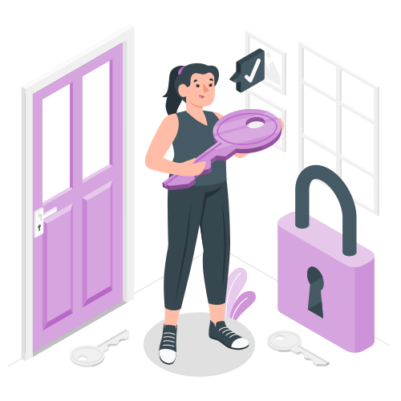

Páginas do projeto
Solução proposta
A solução aqui apresentada consiste no desenvolvimento de um sistema que auxilie a Porto a melhorar a assertividade da escolha de modal para atendimento de veículos pesados. A proposta é implementar um chabot que será responsável por reunir algumas informações do cliente, como dados pessoais, tipo de veículo, placa, etc. As informações coletadas serão utilizadas tanto para identificação e confirmação de cadastro do cliente, quanto para alimentar uma rede neural que irá analisar os dados e, a partir do conhecimento gerado por outras iterações, escolher a melhor opção de modal para auxiliar o cliente e acionar o motorista que irá socorrê-lo.
A escolha da rede neural como solução do problema partiu do princípio que é um método que não requer intervenção humana para funcionar, já que ensina computadores a processar dados de forma similar ao cérebro humano. Basta coletar os dados necessários e alimentá-la com eles e a cada iteração ela ficará mais inteligente, tomando a melhor decisão para cada caso. Além de automatizar o processo de escolha do tipo de modal, o contato com o cliente pode ser feito diretamente pelo chatbot (implementado em sites ou redes sociais), ou continuar sendo feito por um agente humano (que intermediará o contato entre o chatbot e o cliente, seguindo o roteiro proposto pelo chat). Dessa forma, há a garantia de que todos os contatos passarão por um roteiro ideal, coletando todas as informações possíveis e necessárias para resolver o problema.